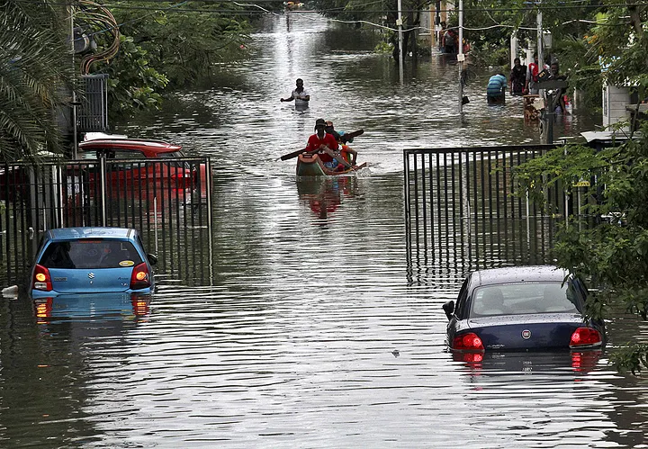
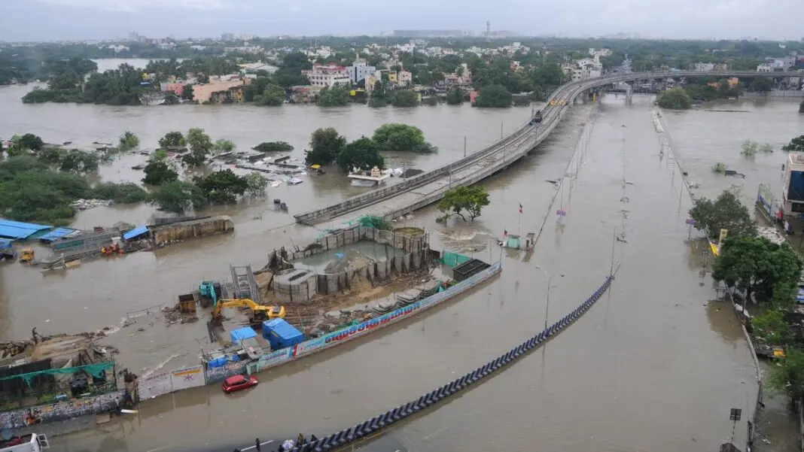

According to the World Meteorological Organization, floods are the deadliest natural hazards, causing over $40 billion in damages annually (WMO, 2023). Since 1980, 4,588 flood disasters across 172 countries have resulted in more than 250,000 deaths and over $1 trillion in damages (Marsh McLennan, 2021).
1.81 billion people — 23% of the global population — live in areas exposed to 1-in-100-year flood events, with 89% in low- and middle-income countries (World Bank, 2022).
South and East Asia bear the greatest burden — India alone accounts for 390 million exposed individuals (Rentschler et al., 2022).
Number of flood disaster events by country (1980–2025). The International Disaster Database. Centre for Research on the Epidemiology of Disasters (consulted: February 2025); Rentschler, J., Salhab, M. and Jafino, B.A. (2022) 'Flood exposure and poverty in 188 countries', Nature Communications, 13(1). Available at: https://doi.org/10.1038/s41467-022-30727-4


All inputs are open-access. OSM = OpenStreetMap | GCC = Greater Chennai Corporation | IWRS = India Water Resources System
| Source | Content | Use in study |
|---|---|---|
| Network & flood modelling | ||
| OpenStreetMap | Base road network | Street network (NAIN / NACH analysis) |
| OpenCity Data | 100-year return period flood model | Flood scenario — segment removal & penalties |
| Urban infrastructure & population | ||
| Greater Chennai Corporation (2024) | Population, shelters, emergency boats | Digitised from City Disaster Management Plan PDFs |
| GCC Historical maps (PDF) | Land use maps | Redrawn and georeferenced |
| Hydrology & environment | ||
| IWRS (India) | Water network reference | Hydrological mapping & canal overlay |
| Satellite imagery | Canal & waterway mapping | Hand-mapped canal network |
Four sequential stages — from flood diagnosis to local resilience proposals.
Methodological framework: four sequential stages from flood diagnosis to local resilience.
Chennai's street network fractures under a 100-year flood event. 6.56% of segments are lost entirely, but the real damage is systemic: the network splits into five disconnected fragments (F1–F5), each cut off from the rest of the city. City-scale accessibility drops nearly 20%, meaning fewer destinations reachable, longer detours, and critical services suddenly out of reach for thousands of residents.
The network does not fracture in a vacuum. Each of the five disconnected fragments encloses a different urban reality: hospitals, schools, informal settlements, and emergency shelters that lose road access the moment flood water rises. Overlaying the fragmented network with land use and infrastructure data reveals not just where the city breaks, but what breaks with it.
Fragment F4 concentrates the highest exposure across every category, the city's most vulnerable pocket under flood conditions.
Emergency corridors keep the city connected under flood. But connection alone is not enough, the water itself must have somewhere to go. Low-lying zones cross-referenced with high flood-risk areas reveal where floodplain excavation can restore natural drainage capacity and where density must be reduced to limit future exposure.
When road access collapses, the flooded network itself becomes the route. Emergency boats are already deployed across the city. The question is whether they sit where they can actually matter.
The network fractures. Some areas hold. But spatial continuity is not enough if the city that holds together is the one that was already excluded from services, infrastructure, and investment. Resilience must be both technical and political.
A well-integrated street network may fail under flood stress if it overlays fragmented governance, marginalization, or infrastructural decay. Space Syntax reveals the structure, but the structure is not neutral.
Population density and land use were integrated, but detailed demographic vulnerability, including age, disability, and income, could not be fully incorporated. The model shows where the city breaks, not always who breaks with it.
Built entirely on open-access data, the methodology is transferable to other flood-vulnerable cities in the Global South confronting rapid urbanization and intensifying hydroclimatic threats.